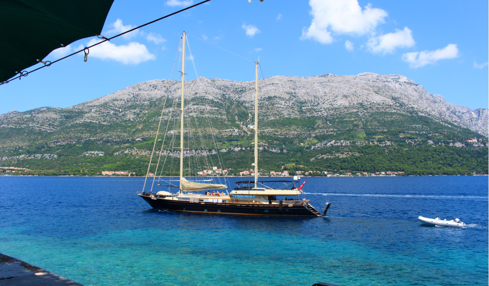

Getting There

Driving
From the UK, the quickest route is Eurotunnel from Folkestone, then France, Belgium, Germany, Austria, Slovenia and Croatia through Rupa. It is then a short drive to Rijeka and an overnight ferry to Korcula.
Flying
To Split and then a 2 1/2 hour drive to Ploce where the ferry will take you to Trpanj on the peninsula. From there the drive to Orebic will take 20 minutes.
To Dubrovnik and then a 1 3/4 hour drive to Orebic
Sea
Ferries will take you up or down the Adriatic Sea, or across from Ancona, Bari or Pescara in Italy. They all go to Korcula.